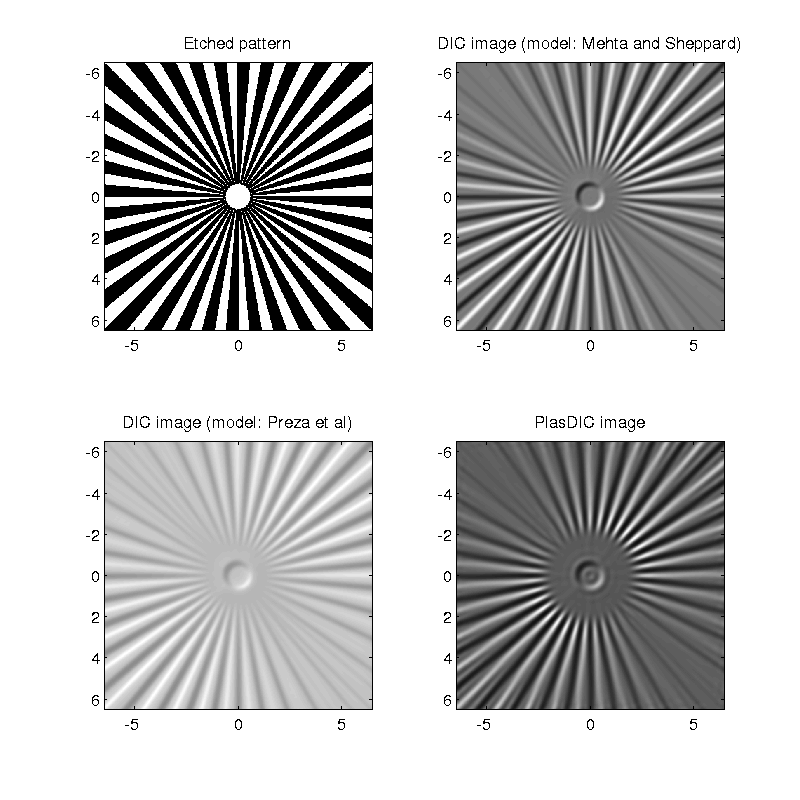

Contents
Image of MBL/NNF Siemens target under differential interference contrast.
This script simulates image of the Siemens test object from the MBL-NNF phase target for differential interference contrast (DIC) imaging. We simulate a small region 7umx7um near the center so that the computation can be carried out in reasonable time.
Images for two models of DIC (as designed by Smith and Nomarski that uses prisms on both condenser and objective side) are compared. The diffraction model proposed in 1999 by Preza[1] failed to account for the coherence effects of the condenser-side prism and therefore predicts poor DIC contrast when imaging is done with large condenser aperture, which is actually the experimental advantage of DIC over other phase microscopy methods.
Our model [2] correctly accounts for the coherence effects and predicts a contrast that matched well with experimental images.
[1] C. Preza, D. L. Snyder, and J.-A. Conchello, “Theoretical development and experimental evaluation of imaging models for differential interference contrast microscopy,” J. Opt. Soc. Am. A 16, 2185–2199 (1999).
[2] S. B. Mehta and C. J. R. Sheppard, “Partially coherent image formation in differential interference contrast (DIC) microscope,” Opt. Express 16, 19462–19479(2008).
We also simulate an image assuming a PlasDIC system as designed by Zeiss that uses a slit on the illumination side and a prism on the objective side.
clear all;
Set parameters of the target.
% Following numbers are from Fig 8.2 of the book chapter on MBL/NNF % target. Rout=75/2;% Outer radius of siemens star. Rin=0.6; %Inner radius of siemens star. RISiO2=1.46; ThickSiO2=0.09; simRadius=7; % radius of simulated region.
Parameters of the DIC microscope.
Parameters correspond to the experimental image that we use in the paper.
DICparams.wavelength=0.546; DICparams.NAo=1.4; DICparams.NAc=0.95; % Between the coverglass and coverslip airgap was present. Condenser was oiled though. DICparams.nEmbb=1; DICparams.nImm=1.515; DICparams.shear=0.48/2; %Measured from fringe. DICparams.bias=25; DICparams.shearangle=45;
Compute specimen transmission.
xsim=-simRadius:0.02:simRadius; %2nm sampling is required to properly sample slight over or under-etching of the target usim=0; %usim=-1:0.2:1; % To simulate defocus. % Assume slight overetching and therefore non-square azimuthal phase % grating. OverEtchProfile=mblnnfSiemens(xsim,xsim,0.04); oplOverEtch=(2*pi/DICparams.wavelength)*(DICparams.nEmbb-RISiO2)*OverEtchProfile*ThickSiO2; specimenOverEtch=exp(1i*oplOverEtch); DICMicroscope=microlith(xsim,usim); % Second argument is z. % Compute system pupils and the image according to the model proposed by % Mehta and Sheppard. DICMicroscope.computesys('DIC',DICparams); DICImage=DICMicroscope.computeimage(specimenOverEtch,'CPU'); % Compute system pupils and the image according to the model proposed by % Preza et al. DICMicroscope.computesys('DIC-Preza',DICparams); DICPrezaImage=DICMicroscope.computeimage(specimenOverEtch,'CPU'); % Compute system pupils and the image for PlasDIC system. DICparams.NAc=0.25; DICMicroscope.computesys('PlasDIC',DICparams); PlasDICImage=DICMicroscope.computeimage(specimenOverEtch,'CPU');
Compare the etch profile and images.
Dark regions are etched and white regions are intact silica. Images are linked, so panning or zooming one will do the same for all images.
DICDisp=gray2norm(DICImage); DICPrezaDisp=gray2norm(DICPrezaImage); PlasDICDisp=gray2norm(PlasDICImage); figure(1); clf; set(1,'color','white','Position',[100 100 800 800],'defaultaxesfontsize',14); colormap gray; ha=imagecat(xsim,xsim,~OverEtchProfile,DICDisp,DICPrezaDisp,PlasDICDisp,'equal','link'); % All four images are linked, so zooming or panning one will do the same on % all others. axes(ha(1)); title('Etched pattern'); axes(ha(2)); title('DIC image (model: Mehta and Sheppard)'); set(gca,'Clim',[0 1]); axes(ha(3)); title('DIC image (model: Preza et al)'); set(gca,'Clim',[0 1]); axes(ha(4)); title('PlasDIC image'); set(gca,'Clim',[0 1]); xlim([-6.5 6.5]); ylim([-6.5 6.5]); % The features at the edges (about 200nm or the size of the image of a % point) are affected by the edge artifacts.